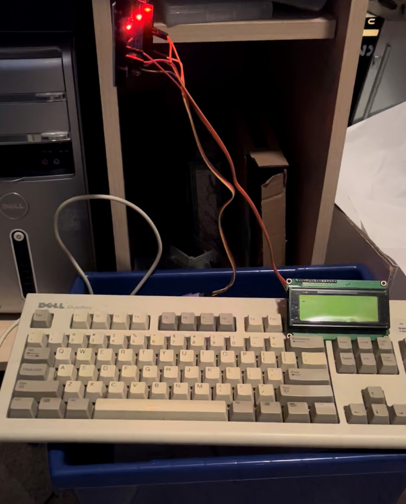
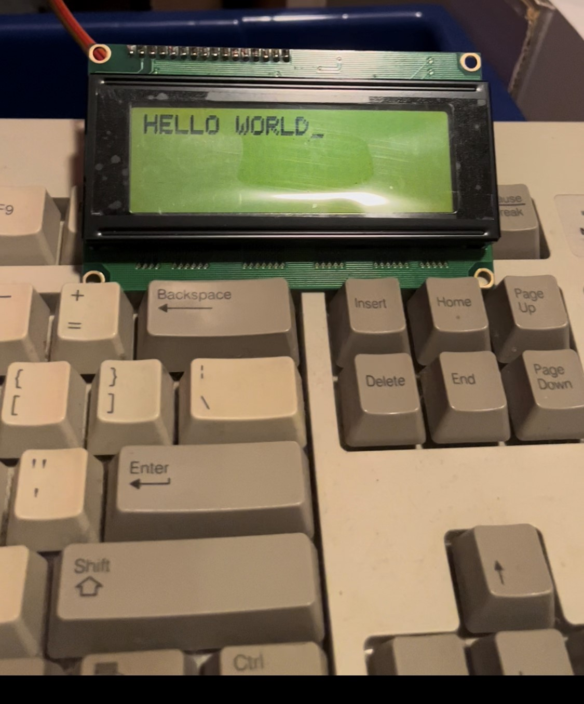

Arduino PS/2 keyboard and serial LCD
This is a small project that I started and paused last summer and finished very recently. It is a very simple device that takes input from a PS/2 keyboard and outputs the input onto a Parallax Serial LCD.
The electronics for this project are quite simple. An Arduino Uno clone is the center of the project, power, ground, clock, and data from the PS/2 keyboard are connected to the Arduino. Additionally, power, ground, and a serial transmit pin are connected to the Parallax LCD from the Arduino.

Then comes the firmware. I found this video from Ben Eater on YouTube to be very helpful in understanding the PS/2 protocol at a basic but sufficient level for this project. I bound an interrupt to the clock pin of the PS/2 keyboard and had the digital value on the data pin written to a bit buffer (that was just an unsigned integer I was doing bit-shift operations to) at each falling edge of the clock. Then once all 11 bits were collected, I did some bitwise operations on the bit buffer until it was in a format that matched that in the video (only to make it more compatible with my understanding of the interface, to make it easier for me to code). Then I was able to turn that format into a PS/2 scancode, get the character of that scancode, write the character to a string, and print the string to the LCD (done over a software serial interface). One problem that I had when implementing this is that the bit buffer could sometimes get desynchronised, which would throw all the bit decoding timing off, so I periodically cleared the bit buffer just to be sure that it was clear when a character came in. Another problem was that the PS/2 keyboard sends out 3 11-bit values for each key press (two being codes for the character and one being a control code I think), so I had to have a boolean variable that switched back and forth to only allow one of the valid character signals to print a character to the screen.

There are a couple of things that I might do when I come back to this project. One of them is to find a PS/2 port and connect wires to the pins of that instead of connecting them directly to the pins on the PS/2 port on the keyboard. This would probably make it more robust and easier to use different PS/2 keyboards or even different PS/2 peripherals. Another potential addition is to modify this Arduino TinyBASIC port to run with keyboard input and LCD output to have a little computer running BASIC. Another idea to continue this project is to just have it as a standalone UART serial terminal. It probably wouldn't be very practical, but it might be useful to quickly connect a serial device to it and be able to interact with it right away through a dedicated device.
Overall, I'm really happy with how this project turned out. It's fun to connect a bunch of information from a bunch of different sources, put all that information together into a project, and have that project work! I especially enjoyed working with the lower-level bit manipulation stuff, because that made me feel like there was a really strong bond between hardware and firmware in this project. If you want to see the project code, I have it in a GitHub repository here.